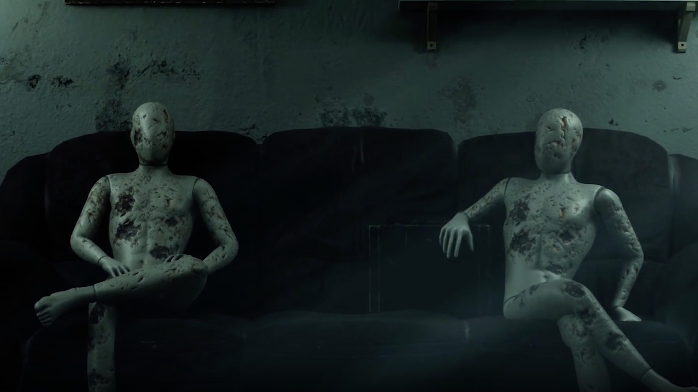

Escape is a horror environment recreated as a technical study while
transitioning from Unity to Unreal Engine 5. The project focused on
rebuilding an existing scene using modern environment art workflows,
cinematic lighting with Lumen, and real-time rendering techniques to
create a more immersive atmosphere.
Cinematic walkthrough rendered in Unreal Engine 5 using Lumen,
volumetric lighting, and real-time rendering.
THE CHALLENGE
Rebuilding a Unity Scene in Unreal Engine 5
Rather than simply recreating the original environment, the goal was
to understand Unreal Engine's rendering pipeline while improving the
visual quality through physically based materials, cinematic lighting,
and stronger environmental storytelling.

The reconstructed environment emphasizes atmosphere, lighting, and
composition while maintaining the core layout of the original scene.
ENVIRONMENT DEVELOPMENT
From Graybox to Final Render
The environment evolved from a simple grayboxed prototype into a
fully realized horror scene through lighting, material creation,
environmental detailing, and post-processing.
UNLIT
FINAL RENDER
Comparison between the early blockout and the finished environment,
demonstrating the impact of lighting, materials, and post-processing.
CINEMATIC DETAILS
Horror Through Environmental Storytelling
Close-up compositions were carefully framed to reinforce the horror
atmosphere using lighting, religious symbolism, and visual focal
points that naturally guide the viewer's attention.
Close-up compositions emphasize storytelling through composition,
lighting, symbolism, and environmental detail.
LIGHTING & ATMOSPHERE
Building Suspense Through Lighting
Lighting played the biggest role in transforming the environment into
a believable horror experience. Practical light sources, volumetric
effects, and Lumen Global Illumination were balanced to create depth,
realism, and tension.
Lumen
Dynamic global illumination created realistic indirect
lighting and believable bounce light throughout the scene.
Volumetrics
Atmospheric fog and subtle light shafts reinforced the
cinematic horror mood.
Materials
Physically based materials added believable surface variation,
aging, and environmental wear.
PRODUCTION PIPELINE
Technical Workflow
The project combines Unreal Engine's real-time rendering capabilities
with modern environment art workflows to produce cinematic visuals
while maintaining interactive performance.
01
Engine
Unreal Engine 5
02
Lighting
Lumen Global Illumination
03
Assets
Quixel Bridge & Sketchfab
04
Rendering
Real-Time Rendering
PROJECT REFLECTION
Strengthening My Unreal Engine Workflow
This project marked an important step in expanding my environment art
workflow beyond Unity. Rebuilding the scene in Unreal Engine 5
strengthened my understanding of cinematic lighting, real-time
rendering, environmental storytelling, and production-ready workflows.
01
Technical Growth
Expanded my workflow from Unity into Unreal Engine 5 while
learning modern real-time rendering techniques.
02
Environment Design
Applied cinematic composition, lighting, and environmental
storytelling to strengthen atmosphere and immersion.
03
Continuous Learning
Reinforced the importance of iteration, technical research,
and artistic direction when building immersive environments.
This project represents an important milestone in my transition
toward professional Unreal Engine environment art and cinematic
real-time rendering.